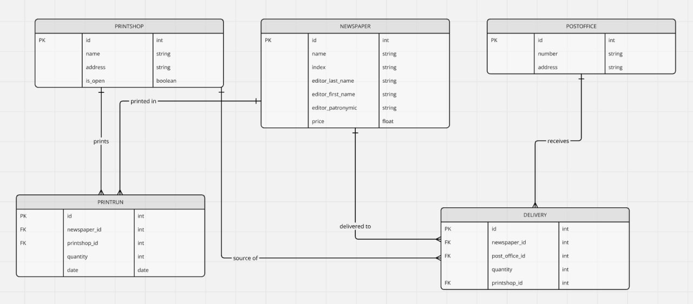

Модели и эндпоинты¶
База данных¶

Система позволяет отслеживать распределение по почтовым отделениям газет, печатающихся в типографиях города.
Описание эндпоинтов¶
PrintShop API¶
GET /printshops/¶
Возвращает список всех типографий. Доступ: Администраторы.
POST /printshops/¶
Создает новую запись типографии. Доступ: Администраторы.
GET /printshops//¶
Возвращает данные конкретной типографии. Доступ: Администраторы.
PUT /printshops//¶
Обновляет информацию о конкретной типографии. Доступ: Администраторы.
DELETE /printshops//¶
Удаляет запись типографии. Доступ: Администраторы.
Newspaper API¶
GET /newspapers/¶
Возвращает список всех газет. Доступ: Все авторизованные пользователи.
POST /newspapers/¶
Создает новую запись о газете. Доступ: Все авторизованные пользователи.
GET /newspapers//¶
Возвращает данные конкретной газеты. Доступ: Все авторизованные пользователи.
DELETE /newspapers//¶
Удаляет запись о конкретной газете. Доступ: Все авторизованные пользователи.
PrintRun API¶
GET /printruns/¶
Возвращает список всех тиражей. Доступ: Все авторизованные пользователи.
POST /printruns/¶
Создает новый тираж. Доступ: Все авторизованные пользователи.
GET /printruns//¶
Возвращает данные о конкретном тираже. Доступ: Все авторизованные пользователи.
DELETE /printruns//¶
Удаляет запись о тираже. Доступ: Все авторизованные пользователи.
Delivery API¶
GET /deliveries/¶
Возвращает список всех доставок. Доступ: Все авторизованные пользователи.
POST /deliveries/¶
Создает запись о новой доставке. Доступ: Все авторизованные пользователи.
GET /deliveries//¶
Возвращает данные о конкретной доставке. Доступ: Все авторизованные пользователи.
DELETE /deliveries//¶
Удаляет запись о доставке. Доступ: Все авторизованные пользователи.
Newspaper Analytics API¶
GET /newspaper-analytics/?query_type=newspaper_addresses&name=¶
Возвращает адреса почтовых отделений, в которые доставляется указанная газета. Доступ: Авторизованные пользователи.
GET /newspaper-analytics/?query_type=editor_of_largest_circulation&printshop_id=¶
Возвращает редактора газеты с наибольшим тиражом в указанной типографии. Доступ: Авторизованные пользователи.
GET /newspaper-analytics/?query_type=post_offices_for_expensive_newspapers&price=¶
Возвращает почтовые отделения, где распространяются газеты с ценой выше указанной. Доступ: Авторизованные пользователи.
GET /newspaper-analytics/?query_type=newspapers_with_low_quantity&quantity=¶
Возвращает список газет с количеством экземпляров меньше указанного. Доступ: Авторизованные пользователи.
GET /newspaper-analytics/?query_type=newspaper_destinations&name=&address=¶
Возвращает список почтовых отделений, куда доставляется газета, печатающаяся на указанном адресе. Доступ: Авторизованные пользователи.